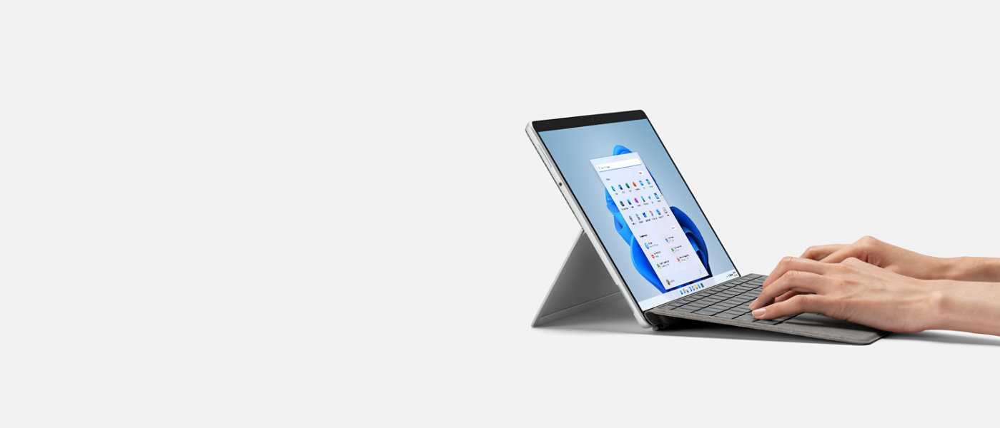

¡Bienvenido al mundo windows!
¡Bienvenido al mundo windows!
Windows es el nombre de una familia de distribuciones de software para PC, servidores, sistemas empotrados y antiguamente teléfonos inteligentes desarrollados y vendidos por Microsoft y disponibles para múltiples arquitecturas, tales como x86, x86-64 y ARM.
Fue dado a conocer oficialmente en septiembre de 2014, seguido por una breve presentación de demostración en la conferencia Build 2014.
Windows 11 es el nombre de la versión más reciente del sistema operativo Windows desarrollado por Microsoft, además de ser el sucesor de la anterior versión del sistema operativo, Windows 10, lanzado en 2015.
Se lanzó en octubre de 2009. Esta versión estaba diseñada para uso en PC, incluyendo equipos de escritorio en hogares y oficinas, equipos portátiles, tabletas, netbooks y equipos multimedia.

-Los jóvenes actuales apenas conocen los discos informáticos de almacenamiento, más allá del CD o el DVD. Pero antes de ellos, incluso antes de que existieran los discos duros domésticos, existán los discos blandos o floppy-disk.
-El software para Windows más antiguo actualmente en desarrollo es el simulador de vuelo Microsoft Flight Simulator, que nació... tres años antes que Windows.
-Cuando en 1975 Bill Gates fundó Microsoft con su mentor, el recientemente fallecido Paul Allen, se marcaron un ambicioso objetivo: "Una casa, un PC con software de Microsoft". Hoy nos parece algo obvio y natural, pero fue Microsoft (con ayuda de compañías como Intel o IBM) la que lo consiguió.
-El tipo de software que maneja Windows es privado
-Su servidor web es Microsoft IIS
-El lenguaje script que maneja es VBScript, ASP.NET
-Maneja base de datos como Microsoft SQL Server, Microsoft Access
-Su software de gestión es Plesk
-Tiene Interfaz de usuario gráfica
Comenzando el milenio fue lanzado Windows XP, en 2001, y para 2012 ocupaba 46,33% del mercado de uso de sistemas operativos en el mundo. En el lapso de 2007 y 2012, se lanzaron las versiones Windows Vista y Windows 8, sistemas que fracasaron en el mercado y que no llegaron a reemplazar directamente la versión anterior.
Puedes encontrar más de Windows dando click aquí, y aprende todo acerca de lo que trata esta empresa y su sistema operativo.
